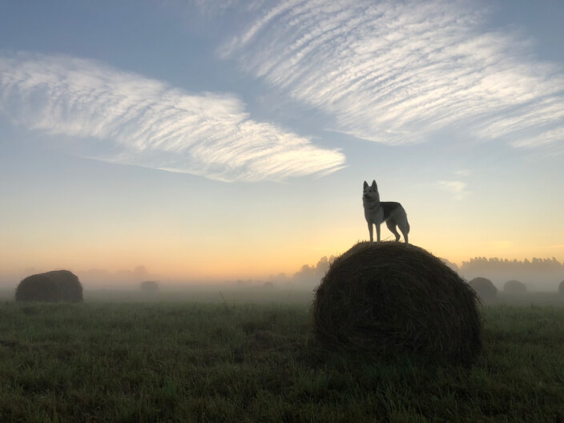
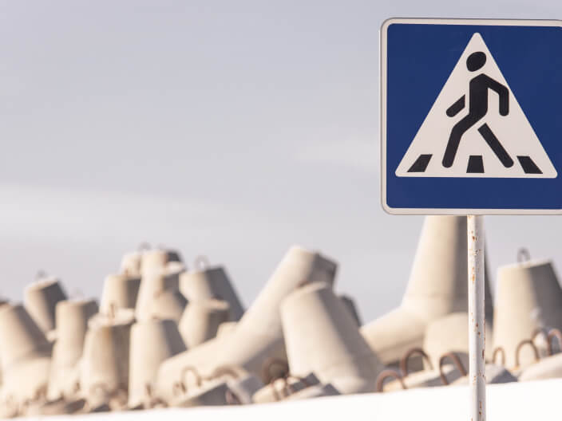
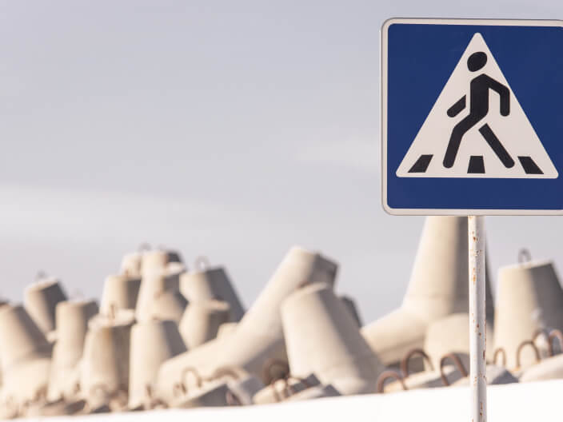
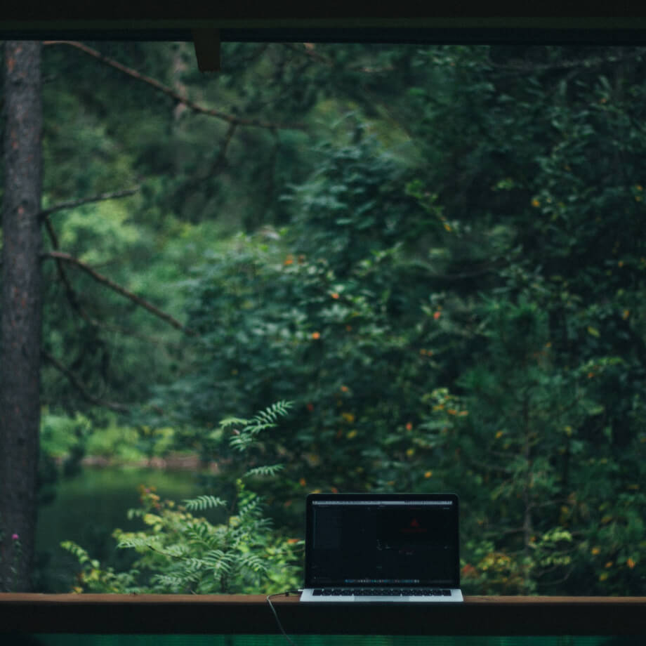

Путешествия по России
Настоящая страна не в выпусках новостей, а здесь.
ваша полка — верхняя
Чего мы там не видели?
По опросам ВЦИОМ, 95% россиян мечтают куда-нибудь поехать, но только 36% планируют
провести отпуск в родной стране. Мол, чего мы тут, дома, не видели? На самом деле, Россия — это целая
вселенная с ласковым морем юга, густыми лесами Саян и суровыми льдами плато Путорана. А ещё увидеть все эти
красоты можно без миллионов на счету, загранпаспорта и многочасовых перелетов. Как, например, Вера Башмакова —
смелая молодая мама, которая взяла в охапку троих детей, усадила их в свою «Ладу» и проехала 20 тысяч
километров по родной стране. Мы выбрали и описали некоторые интересные места, достойные вашего отпуска.
- Часовых поясов 11
- Объектов природного наследия ЮНЕСКО 12
- Объектов культурного наследия ЮНЕСКО 16
- Природных заповедников 105
- Аэропортов 241

 


-

Здесь, посреди лесов и песчаных дюн, вы сможете увидеть два водных горизонта —
спокойного Куршского залива с одной стороны и подёрнутого рябью волн Балтийского моря с другой.
Уникальная природная зона на краю российского анклава.
На этом Калининградская область не заканчивается. Для путешественника и
исследователя там же по соседству — самая западная точка России, Балтийская коса, — и немецкое
наследие россыпи небольших приморских городов. Атмосфера здешних мест исключает суету, окуная в
спокойствие природы и запах стального, прохладного моря.
-

Почти весь полуостров находится за Полярным кругом. Саамская тундра, от которой на
юг — тайга, а на север — Ледовитый океан, прикидывающийся Баренцевым морем.
Возможно, вы смотрели Звягинцева и даже слышали историю арктического фестиваля в
Териберке. Возможно, слово «Хибины» не осталось под снегом школьных воспоминаний об уроках географии.
Возможно, вы не интересовались пронизывающей земную кору сверхглубокой скважиной, а от апатитов вас
давно накрывает апатия. Но ваша мечта увидеть северное сияние начинает сбываться с билетом
в Мурманск.
-

Алтай — одно из красивейших мест в России.
В первую очередь из-за гор: если ехать вдоль хребта, вы увидите склоны, усыпанные соснами, горные
реки и озёра. А если вы откроете в автомобиле окна, сможете познакомиться с невидимым чудом здешних мест
— горным воздухом.
Климат на Алтае умеренный, поэтому ехать сюда лучше всего летом. Так вы увидите всё
разнообразие местной флоры и фауны. По лесам Алтая бродят лоси, над хребтами летают орлы, а на равнинах
пасутся косули. И знаменитые манулы — тоже обитатели Алтайского края.
-

Всем известен Байкал как крупнейшее озеро в мире. Многие также знают, что это самый
большой источник пресной воды и одно из красивейших мест в России.
Конечно, это всё так. Но Байкал ещё идеальное место для соревнований по скийорингу.
Это такой вид спорта, когда лыжник ривязывает себя к мотоциклу, и тандем старается развить как
можно бóльшую скорость на льду. В марте 2019 года на фестивале «Байкальская миля» был поставлен мировой
рекорд — 197.011 км/ч.
-

Сибирь заканчивается не на Урале, а в Карелии: образующая тайгу сибирская
лиственница не растёт западнее Водлозера. Зато здесь она вымахивает на 30 метров — леса карельских
национальных парков из-за непроходимых болот никогда не знали топора. Некоторым соснам уже больше чем
полтысячелетия. Прикоснитесь к живому существу, видевшему солнце раньше, чем увидал его Иван Грозный.
В девственном лесу на сотню километров не встретишь тропы. А на редких тропинках деревья
в паре метров от земли помечены медвежьими когтями. Чтобы все знали, кто тут хозяин.